MongoDB
Exercici opcional
Arquitectures i tecnologies del software
David Lozano Jarque
NIU 1359958
Curs 2016 - 2017
MongoDB
Introducció
MongoDB és una base de dades no-relacional open-source basada en documents que proveeix alt rendiment, alta disponibilitat i escalat automàtic.
Conceptes bàsics
MongoDB agrupa ítems a desar a la base de dades, anomenats documents (que seríen equivalents a les files d'una taula en una base de dades relacional) en col·leccions (collections) que contenen documents amb camps independents segons el document.
Instal·lació
En primer lloc procedim a instal·lar una base de dades MongoDB en un entorn Ubuntu 16.04 LTS (encara que el procediment és gaire similar per qualsevol distribució de Linux basada en Debian).
Seguim els passos oficials del lloc web de MongoDB
Passos
Importar la clau de desenvolupament
Per tal d'assegurar l'integritat dels paquets de software de MongoDB, tant el servidor de base de dades com el client, es necessita la clau pública amb la que els desenvolupadors de MongoDB firmen les seves releases. Descarreguem i afegim la clau pública com a clau de confiança per signar paquets amb la següent comanda:
sudo apt-key adv --keyserver hkp://keyserver.ubuntu.com:80 --recv 0C49F3730359A14518585931BC711F9BA15703C6
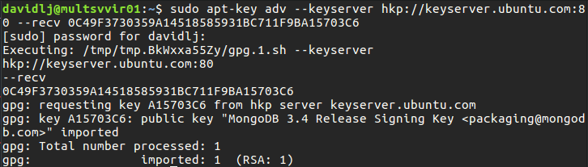
Figura 1. Obtenció i instal·lació de la clau pública dels desenvolupadors de MongoDB
Especificar els repositoris de MongoDB al gestor de paquets
A continuació, indiquem al gestor de paquets d'on descarregar MongoDB creant un fitxer .list dins la ruta /etc/apt/sources.list.d/ amb el nom de mongodb-org-3.4.list on especifiquem segons la nostra distribució, el repositori d'on descarregar el software de MongoDB:
2.1 Trobem la nostra distribució
sudo lsb_release -a
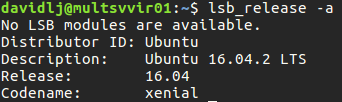
Figura 2. Obtenció de la nostra distribució de Debian / Ubuntu
2.2 Creem el fitxer .list
Especifiquem els repositoris de software de MongoDB al gestor de paquets APT per a indicar d'on descarregar el software de MongoDB. Per a fer-ho, creem un nou fitxer .list que indicarà a APT d'on obtenir els paquets de software de MongoDB.
Escollim el contingut del fitxer segons la distribució que hem trobat al pas anterior. En el nostre cas, indiquem la línia de repositoris per a Ubuntu Xenial 16.04.02 LTS. A l'enllaç dels passos a seguir a l'introducció d'aquest capítol es poden trobar les URL de repositoris per altres distribucions Debian / Ubuntu.
echo "deb [ arch=amd64,arm64 ] http://repo.mongodb.org/apt/ubuntu xenial/mongodb-org/3.4 multiverse" | sudo tee /etc/apt/sources.list.d/mongodb-org-3.4.list
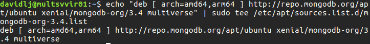
Figura 3. Creació del fitxer mongodb-org-3.4.list per indicar la ubicació dels repositoris de software de MongoDB
Refresc de respositoris i instal·lació
Finalment, refresquem els repositoris d'APT per que trobi els repositoris indicats anteriorment i instal·lem els paquets de MongoDB que necessitem, en el nostre cas, el servidor de base de dades i el client de shell.
sudo apt update && sudo apt install -y mongodb-org
(el paquet mongodb-org inclou servidor i client de shell)
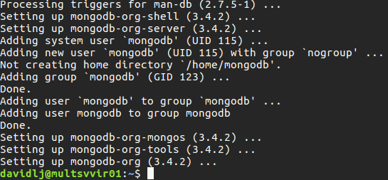
Figura 4. Instal·lació del software servidor i client de shell de MongoDB
Inici del servei del servidor de MongoDB
A continuació, iniciem el dimoni de MongoDB que executarà el servidor de base de dades de MongoDB. El dimoni s'anomena mongod. L'iniciem amb la següent comanda:
sudo service mongod start
Comprovació del servei de MongoDB
Per comprovar que el servei que executa el servidor de MongoDB està funcional i operatiu, podem en primer lloc fer servir la comanda
sudo service mongod status
I també comprovar l'estat mitjançant el log de mongod:
sudo tail /var/log/mongodb/mongod.log
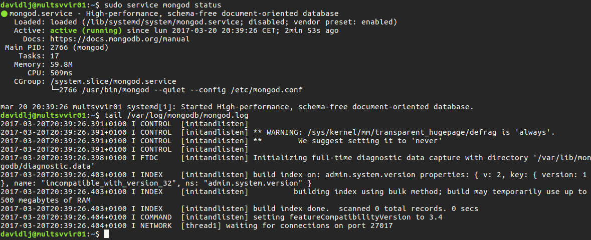
Figura 5. Comprovació de l'estat del servei servidor de MongoDB mongod
La línia
[initandlisten] waiting for connections on port <port>
Ens indica que tot funciona correctament i ja està llest per funcionar
Configuració addicional
Per defecte, el servidor de MongoDB es configura per escoltar peticions locals (a l'adreça IP 127.0.0.1) al port 27017. Per usar MongoDB a través d'una xarxa, s'ha d'editar la configuració de mongod editant el fitxer amb permisos d'administrador
/etc/mongod.conf
I canviar la propietat bind_ip per l'adreça de xarxa per la qual ens voldrem connectar a MongoDB (diferent de la local 127.0.0.1). Per desar els canvis, desem el fitxer i reiniciem el servidor
sudo service mongod restart
Ús de MongoDB
A través del terminal
Per usar el client de shell de MongoDB, simplement si ja hem instal·lat el client a la màquina (el paquet de software mongodb-org-shell), executar la següent comanda:
mongo
Això ens obrirà una sessió per usar el servidor de base de dades local (adreça per defecte 127.0.0.1 i port 27017).
A partir d'aqui ja podem enviar comandes al servidor de MongoDB
Per obrir una sessió contra un servidor remot, podem especificar opcions al programa mongo, que venen detallades al manual del client de shell:
Manual del client de shell de MongoDB
Amb Java
Si volem usar MongoDB en una aplicació Java, hem d'instal·lar abans el connector de Java per a MongoDB, anomenat MongoDB Driver.
Per a fer-ho, una bona pràctica és crear un projecte Java amb el gestor de dependències Apache Maven que ens descarrega automàticament les dependències que necessitem per a desenvolupar un projecte de Java un cop les especifiquem en el fitxer de configuració corresponent (pom.xml).
Si no volem realitzar el pas de configurar Apache Maven, també podem descarregar manualment el fitxer .jar corresponent amb la llibreria de Java que conté el MongoDB Driver. Això es la tasca que Apache Maven realitza automàticament
Llibreria .jar per a Java amb MongoDB Driver
Passos per crear un projecte Java amb MongoDB
1. Instal·lació de l'entorn de desenvolupament
Eclipse Neon2 for Java + Java JDK + Java JRE + Maven
En primer lloc, usarem l'entorn de desenvolupament Eclipse Neon.2 per a Java, disponible al següent enllaç:
Eclipse Neon2 per a Java
Per a desenvolupar aplicacions en Java, necessitem el Java Development Kit i també el Java Runtime Environment per executar-les. A partir d'aquest punt, suposarem que tenim ben configurat al nostre sistema l'entorn de desenvolupament d'aplicacions Java (Java JDK) i la màquina virtual Java (Java JRE). En cas contrari, al següent enllaç es troba una guia per instal·lar-lo sota Ubuntu 16.04.02 LTS
Instal·lació de Java JDK en Ubuntu 16.04 LTS
Suposem també que s'ha instal·lat el gestor de dependències Apache Maven. En cas contrari es pot instal·lar senzillament amb la següent comanda usant el gestor de paquets APT:
sudo apt install maven
2. Creació d'un projecte Java amb Apache Maven
Nosaltres usarem la bona pràctica en projectes Java d'usar el gestor de dependències Apache Maven per a instal·lar automàticament el MongoDB Driver. Per a fer-ho, creem des d'Eclipse un nou projecte
2.1 Nou projecte en Eclipse
Per crear un nou projecte, cliquem en File -> New... -> Project
Figura 6. Menú de creació d'un nou projecte a Eclipse
A continuació, seleccionem dins de Maven, crear un nou projecte de Maven
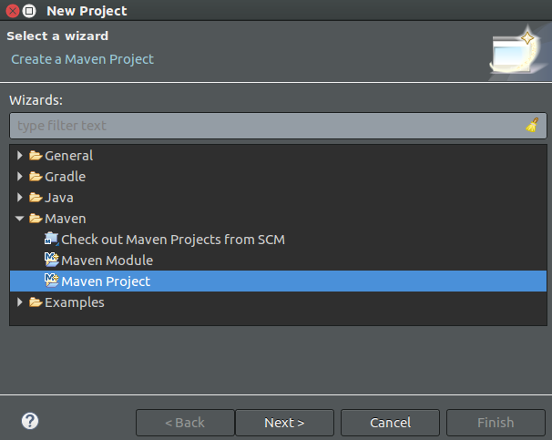
Figura 6. Selecció de creació de projecte Maven
Seleccionem tot per defecte, tal i com es mostra a les figures següents i usem l'arquetipus de Maven bàsic ja que només volem fer una aplicació simple de Java.
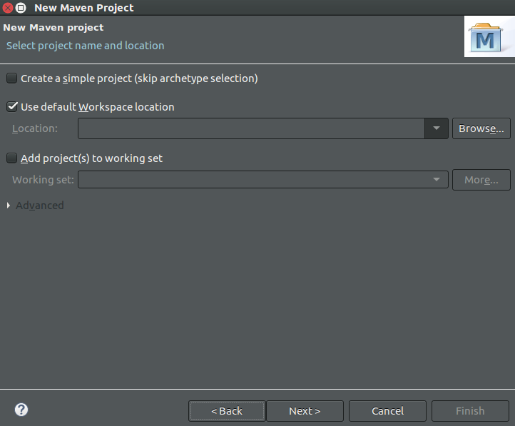
Figura 7. Paràmetres del projecte Maven
Ens demanarà sel·lecionar un arquetipus de manera que Maven ens crei automàticament l'estructura necessària de la nostra aplicació si serà un plugin de Java, una aplicació J2EE,... Com nosaltres realitzarem una aplicació simple, seleccionem l'arquetipus bàsic.
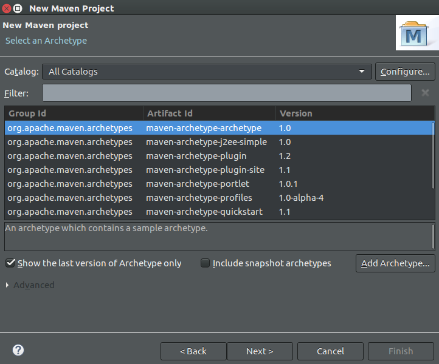
Figura 8. Selecció de l'arquetipus bàsic de Maven
Finalment ens demana definir el Group Id i l'Artifact Id. Com a Group Id es recomana indicar, segons la notació de Java per a packages (<domini>.<nom_domini>.<projecte>), el nom del projecte que desenvoluparem.
En el nostre cas desenvoluparem el projecte mongodb dins l'organització davidlj95.com.
En quant a l'Artifact Id, es refereix al mòdul del projecte que desenvoluparem i al nom que tindrà l'aplicació finalment. Nosaltres indiquem simple_app de manera que l'aplicació s'anomenarà així si l'empaquetem en un .jar, per exemple.
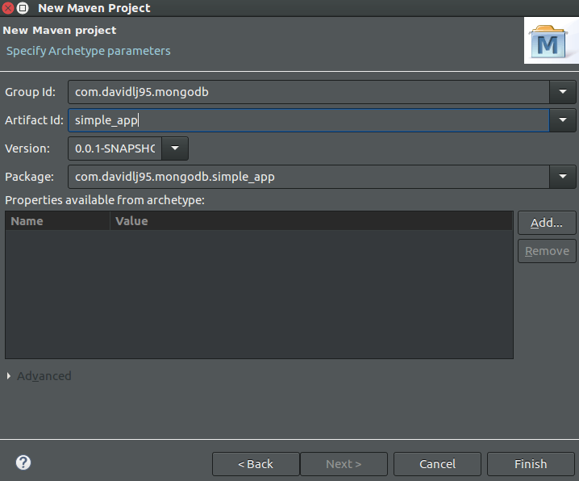
Figura 9. Definició del projecte Maven
Premem el botó per finalitzar i tindrem ja disponible els fitxers del nostre projecte Maven llestos per començar a programar:
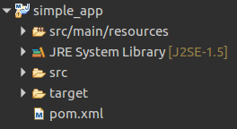
Figura 10. El nostre projecte Maven
2.2 Afegir el requeriment de MongoDB Driver
Per a afegir el connector MongoDB Driver, necessitem actualitzar les dependències del projecte per afegir la llibreria corresponent. Per a fer-ho, cliquem amb el botó dret sobre la carpeta amb el nom del nostre projecte (que podem veure a l'anterior figura) i premem Maven -> Add dependency
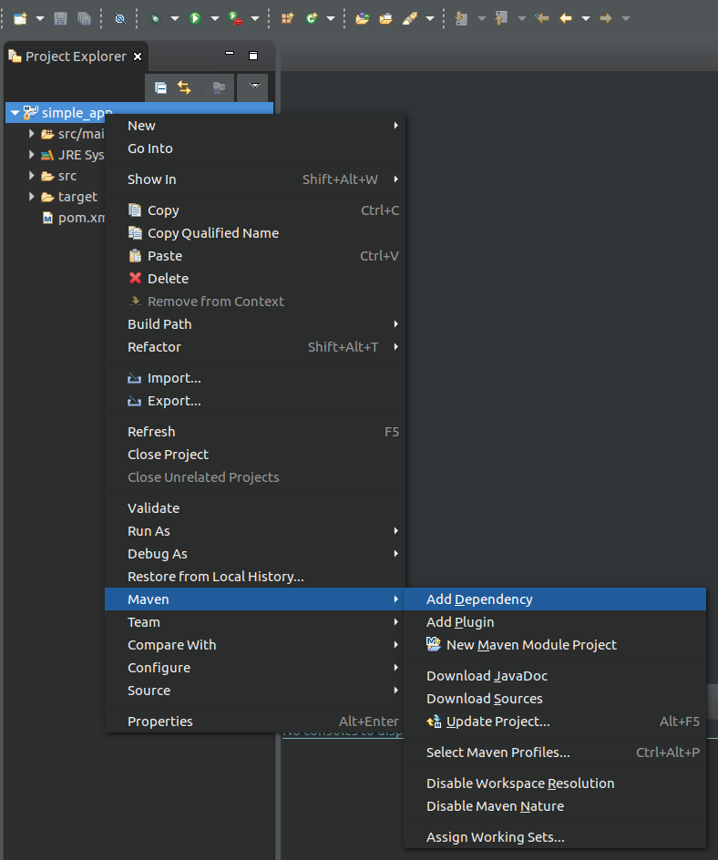
Figura 11. Menú contextual per afegir dependències al projecte
A la nova finestra, cerquem el connector MongoDB Driver. Per això indiquem com a Group Id org.mongodb i com a Artefact Id, mongodb-driver. Usem la última versió: 3.4.2. Premem acceptar quan ho haguem especificat tot.
En cas que Eclipse mostri l'error
Index downloads are disabled, search result may be incomplete.
Podem seguir els passos del següent enllaç per solucionar-ho. Cal realitzar aquests passos per a solucionar el problema. Si no es soluciona, no es descarregaran correctament les dependències.
StackOverflow: How do I enable index downloads in Eclipse for Maven (...)?
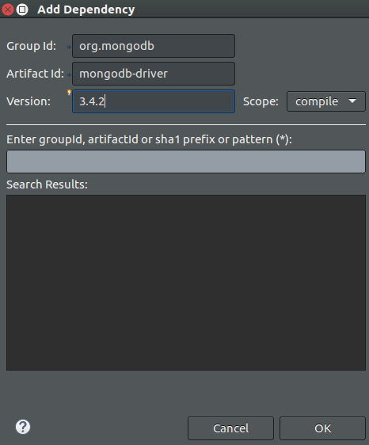
Figura 12. Formulari per afegir la dependència de MongoDB projecte
Hauríem de veure ja al nostre projecte una nova carpeta, anomenada Maven dependencies, on ja es trobi descarregat el MongoDB Driver
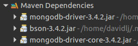
Figura 13. Dependències del projecte descarregades
Ja tenim el MongoDB Driver llest per començar a desenvolupar la nostra aplicació en Java
Exercici
Requeriments
Aquest exercici és opcional i puntuable: es podrà sumar fins a 1 amb nota mínima de 4,5 de nota després de fer examen i pràctiques. S'ha de fer individualment.
Requeriments tècnics per poder realitzar l'exercici: instal.lar mongodb i eclipse amb el driver de mongodb per java.
Les respostes s'han d'enviar per email a helena.bolta@uab.cat abans de la propera sessió de problemes, el 21 de març de 2017.
Insercions
Executeu les sentències següents :
db.mini.insert({name:"Pep", surname:"Lopez", username:"Pep1", location:"Barcelona", suggProd:["Samsung TV 65 QLEV","Samsung TV 55 QLEV"]})
db.mini.insert({name:"Pep", surname:"Puig", username:"PepPu", suggProd:["Samsung TV 65 QLEV","TV LG UHD de 139 cm","Panasonic TX32ES500"]})
db.mini.insert({name:"Josep", surname:"Martí", username:"PepMa", location:"London", suggProd:["Samsung TV 60","Samsung TV 75 QLEV"]})
db.mini.insert({name:"Jose", surname:"Garcia", username:"PepG", location:"London", suggProd:["Samsung TV 65 QLEV","TV LG UHD de 123 cm","TV LG OLED de 139cm"]})
db.mini.insert({name:"Pep", surname:"Mas", username:"PepituNo", location:"Paris", suggProd:["TV LG LED de 123cm","TV LG OLED de 139cm Full HD"]})
db.mini.insert({name:"Jordi", surname:"Lopez", username:"JordiLo", location:"Barcelona", suggProd:["TV LG OLED de 139cm (55 pulgadas), Resolución 4K","ZD9 | LED | 4K Ultra HD","TV LG OLED de 139cm Full HD"]})
db.mini.insert({name:"Jorge", surname:"Martinez", username:"JorgeMa", location:"Barcelona", suggProd:["Samsung TV 65 QLEV","TV LG UHD de 139 cm","TV LG OLED de 139cm Full HD"]})
db.mini.insert({name:"Jordi", surname:"Llamas", username:"JordiLl", location:"Paris", suggProd:["XE85 | LED | 4K Ultra HD","XE94 / XE93 | LED | 4K Ultra HD"]})
db.mini.insert({name:"Jordi", surname:"Ramirez", username:"JordiRa", location:"Barcelona",suggProd:["Panassnic TX-75EX780","Panassnic TX-65EX780","Panasonic TX-75EZ950"]})
db.mini.insert({name:"Jorge", surname:"Gutierrez", username:"JorgeGu", location:"Paris", suggProd:["Samsung TV 65 QLEV","Panasonic TX-65EZ950","Panasonic TX-65DX780"]})
db.mini.insert({name:"George", surname:"Llopis", username:"GeorgeLl", suggProd:["Samsung TV 65 QLEV","Panasonic TX-40ES500","Panasonic TX-40ES400"]})
db.mini.insert({name:"Joan", surname:"Maspoli", username:"JoanMa", location:"Barcelona", suggProd:["Panasonic TX-58DX780","A1 / OLED| 4K Ultra HD","TV LG UHD de 123 cm","Panasonic TX32ES500"]})
Exercicis
Buscar les persones que tenen el camp location amb valor Barcelona i ordenar per cognom ascendentment.
Afegir al camp suggProd el nou producte suggerit Phillips OLED 4K per aquells usuaris que tinguin com a producte suggerit el model Samsung TV 65 QLEV o el model TV LG OLED de 139cm Full HD
Modificar el nom del camp suggProd per suggestedProducts
Versió 1: per terminal
Buscar les persones que tenen el camp location amb valor Barcelona i ordenar per cognom ascendentment.
Comanda
db.mini.find({location:"Barcelona"}).sort({surname: 1})
Usem la comanda find per cercar. La comanda accepta un paràmetre per especificar un filtre a la cerca. Filtrem per localització Barcelona i després ordenem segons el camp surname, indicant 1 per a que sigui ascendent (per defecte el valor és -1 i significa ordre descendent)
Resultats
{ "_id" : ObjectId("58d04da37ff93313a15c1108"), "name" : "Pep", "surname" : "Lopez", "username" : "Pep1", "location" : "Barcelona", "suggProd" : [ "Samsung TV 65 QLEV", "Samsung TV 55 QLEV" ] id:"j0inneh5"}
{ "_id" : ObjectId("58d04da37ff93313a15c110d"), "name" : "Jordi", "surname" : "Lopez", "username" : "JordiLo", "location" : "Barcelona", "suggProd" : [ "TV LG OLED de 139cm (55 pulgadas), Resolución 4K", "ZD9 | LED | 4K Ultra HD", "TV LG OLED de 139cm Full HD" ] }
{ "_id" : ObjectId("58d04da37ff93313a15c110e"), "name" : "Jorge", "surname" : "Martinez", "username" : "JorgeMa", "location" : "Barcelona", "suggProd" : [ "Samsung TV 65 QLEV", "TV LG UHD de 139 cm", "TV LG OLED de 139cm Full HD" ] }
{ "_id" : ObjectId("58d04da37ff93313a15c1113"), "name" : "Joan", "surname" : "Maspoli", "username" : "JoanMa", "location" : "Barcelona", "suggProd" : [ "Panasonic TX-58DX780", "A1 / OLED| 4K Ultra HD", "TV LG UHD de 123 cm", "Panasonic TX32ES500" ] }
{ "_id" : ObjectId("58d04da37ff93313a15c1110"), "name" : "Jordi", "surname" : "Ramirez", "username" : "JordiRa", "location" : "Barcelona", "suggProd" : [ "Panassnic TX-75EX780", "Panassnic TX-65EX780", "Panasonic TX-75EZ950" ] }
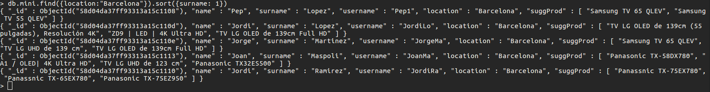
Figura 14. Execució de la comanda de l'exercici 1 per terminal
Afegir al camp suggProd el nou producte suggerit Phillips OLED 4K per aquells usuaris que tinguin com a producte suggerit el model Samsung TV 65 QLEV o el model TV LG OLED de 139cm Full HD
Comanda
db.mini.update({ suggProd: { $in: ["Samsung TV 65 QLEV", "TV LG OLED de 139cm Full HD"]}}, { $addToSet: { suggProd: "Phillips OLED 4K"}}, { multi: true})
Usem la comanda update per realitzar modificacions a la col·lecció. La comanda accepta una query de filtre per restringir el(s) document(s) a editar, un altre paràmetre per especificar la modificació i un tercer paràmetre amb opcions.
Filtrem per documents amb productes suggerits Samsung TV 65 QLEV o bé TV LG OLED de 139cm Full HD amb un query que usa l'operador $in. A continuació especifiquem a l'update l'operació d'afegir a suggProd l'ítem Phillips OLED 4K amb l'operació $addToSet que l'afegirà només si no hi és present ja. Finalment especifiquem a les opcions multi: true per modificar més d'un document si coincideix amb la query especificada
Resultats
WriteResult({ "nMatched" : 8, "nUpserted" : 0, "nModified" : 8 })
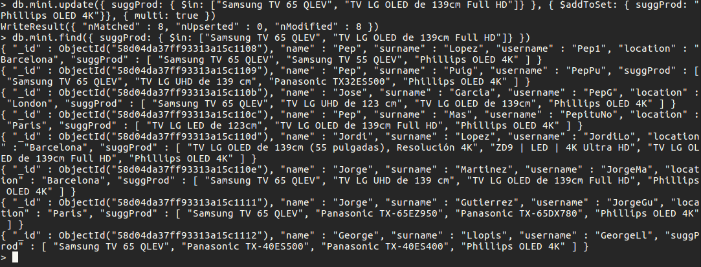
Figura 15. Execució de la comanda de l'exercici 2 per terminal i llistat dels documents canviats
Modificar el nom del camp suggProd per suggestedProducts
Comanda
db.mini.update({},{ $rename: { suggProd: "suggestedProducts" } } , { multi: true })
Usem de nou la comanda update sobre la col·lecció mini. En aquest cas, apliquem la modificació a tots els documents que consistirà amb l'operand rename, editar el nom del camp suggProd per anomenar-lo suggestedProducts
Resultats
WriteResult({ "nMatched" : 12, "nUpserted" : 0, "nModified" : 12 })
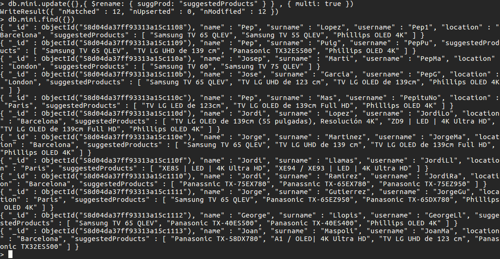
Figura 16. Execució de la comanda de l'exercici 3 per terminal i llistat dels documents canviats
Versió 2: usant Java
Buscar les persones que tenen el camp location amb valor Barcelona i ordenar per cognom ascendentment.
Afegir al camp suggProd el nou producte suggerit Phillips OLED 4K per aquells usuaris que tinguin com a producte suggerit el model Samsung TV 65 QLEV o el model TV LG OLED de 139cm Full HD
Modificar el nom del camp suggProd per suggestedProducts
Codi Java
Crearem una classe Java en un fitxer dins el projecte que hem creat anteriorment que realitzi tots els exercicis.
En primer lloc, tal i com s'indica a la guia de MongoDB per Java, hem de realitzar els següents imports:
import com.mongodb.MongoClient;
import com.mongodb.MongoClientURI;
import com.mongodb.ServerAddress;
import com.mongodb.client.MongoDatabase;
import com.mongodb.client.MongoCollection;
import org.bson.Document;
import java.util.Arrays;
import com.mongodb.Block;
import com.mongodb.client.MongoCursor;
import static com.mongodb.client.model.Filters.*;
import com.mongodb.client.result.DeleteResult;
import static com.mongodb.client.model.Updates.*;
import com.mongodb.client.result.UpdateResult;
import java.util.ArrayList;
import java.util.List;
A continuació, creem una classe anomenada TestMongo (important que estigui dins de src/main/java i comencem a desenvolupar dins el mètode public static void main(String[] args).
Després de desenvolupar, ens trobem que no totes les llibreries ens han fet falta. El següent codi en Java conté les mínimes llibreries a importar per a que compili.
Abans de compilar l'últim que ens falta és afegir la configuració per executar dins de Eclipse. Ho podem fer dins el menú contextual Run -> Run Configurations.... Allà, afegim una nova configuració d'execució del tipus Java Application, on especifiquem la nostra classe que hem creat amb el mètode main.
Aquest és el codi resultant:
package com.davidlj95.mongodb.simple_app;
import com.mongodb.MongoClient;
import com.mongodb.client.MongoDatabase;
import com.mongodb.client.MongoIterable;
import com.mongodb.client.model.Filters;
import com.mongodb.client.model.Sorts;
import com.mongodb.client.model.Updates;
import com.mongodb.client.MongoCollection;
import org.bson.Document;
import org.bson.conversions.Bson;
import com.mongodb.client.result.UpdateResult;
public class TestMongo {
public static void main(String[] args) {
System.out.println("Opening connection to the database");
MongoClient mongoClient = new MongoClient("servidor.davidlj95.com", 27017);
MongoDatabase database = mongoClient.getDatabase("test");
MongoCollection<Document> collection = database.getCollection("mini");
System.out.println("Connected to MongoDB server");
System.out.println("==============================");
System.out.println("EX01: Obtenir documents");
System.out.println(" -> location = Barcelona");
System.out.println(" -> ordenats ascendentment per cognom");
System.out.println("==============================");
MongoIterable<Document> results =
collection.find(new Document("location", "Barcelona")).sort(
Sorts.ascending("surname"));
printResults(results);
System.out.println("==============================");
System.out.println("EX02: Modificar documents");
System.out.println(" -> seleccionar documents amb:");
System.out.println(" \"Samsung TV 65 QLEV\" o \"TV LG OLED de 139cm Full HD\"");
System.out.println(" dins de suggProd");
System.out.println(" -> inserir \"Phillips OLED 4K\" a suggProducts");
System.out.println("==============================");
Bson ex2_filter = Filters.in("suggProd", new String[]{ "Samsung TV 65 QLEV", "TV LG OLED de 139cm Full HD" });
Bson ex2_update = Updates.addToSet("suggProd", "Phillips OLED 4K");
UpdateResult result_update = collection.updateMany(ex2_filter, ex2_update);
System.out.println(String.format("Update result: %s", result_update.toString()));
printResults(collection.find(ex2_filter));
System.out.println("==============================");
System.out.println("EX03: Modificar documents");
System.out.println(" -> Renombrar camp");
System.out.println(" suggProd -> suggestedProducts");
System.out.println("==============================");
Bson ex3_update = Updates.rename("suggProd", "suggestedProducts");
result_update = collection.updateMany(new Document(), ex3_update);
System.out.println(String.format("Update result: %s", result_update.toString()));
printResults(collection.find(new Document()));
mongoClient.close();
}
public static void printResults(MongoIterable<Document> results) {
int i = 0;
for(Document result : results) {
System.out.println(result.toString());
i += 1;
}
System.out.println(String.format("S'han trobat %d resultats", i));
}
}
Tornem a eliminar la base de dades amb un db.mini.remove({}) i inserim de nou les dades per tractar-les ara amb Java
Executem i comprovem que per consola tot funciona com ha de ser:
Opening connection to the database
Mar 21, 2017 12:23:10 AM com.mongodb.diagnostics.logging.JULLogger log
INFO: Cluster created with settings {hosts=[servidor.davidlj95.com:27017], mode=SINGLE, requiredClusterType=UNKNOWN, serverSelectionTimeout='30000 ms', maxWaitQueueSize=500}
Connected to MongoDB server
==============================
EX01: Obtenir documents
-> location = Barcelona
-> ordenats ascendentment per cognom
==============================
Mar 21, 2017 12:23:10 AM com.mongodb.diagnostics.logging.JULLogger log
INFO: No server chosen by ReadPreferenceServerSelector{readPreference=primary} from cluster description ClusterDescription{type=UNKNOWN, connectionMode=SINGLE, serverDescriptions=[ServerDescription{address=servidor.davidlj95.com:27017, type=UNKNOWN, state=CONNECTING}]}. Waiting for 30000 ms before timing out
Mar 21, 2017 12:23:10 AM com.mongodb.diagnostics.logging.JULLogger log
INFO: Opened connection [connectionId{localValue:1, serverValue:10}] to servidor.davidlj95.com:27017
Mar 21, 2017 12:23:10 AM com.mongodb.diagnostics.logging.JULLogger log
INFO: Monitor thread successfully connected to server with description ServerDescription{address=servidor.davidlj95.com:27017, type=STANDALONE, state=CONNECTED, ok=true, version=ServerVersion{versionList=[3, 4, 2]}, minWireVersion=0, maxWireVersion=5, maxDocumentSize=16777216, roundTripTimeNanos=378952}
Mar 21, 2017 12:23:10 AM com.mongodb.diagnostics.logging.JULLogger log
INFO: Opened connection [connectionId{localValue:2, serverValue:11}] to servidor.davidlj95.com:27017
Document{{_id=58d064477ff93313a15c1120, name=Pep, surname=Lopez, username=Pep1, location=Barcelona, suggProd=[Samsung TV 65 QLEV, Samsung TV 55 QLEV]}}
Document{{_id=58d064477ff93313a15c1125, name=Jordi, surname=Lopez, username=JordiLo, location=Barcelona, suggProd=[TV LG OLED de 139cm (55 pulgadas), Resolución 4K, ZD9 | LED | 4K Ultra HD, TV LG OLED de 139cm Full HD]}}
Document{{_id=58d064477ff93313a15c1126, name=Jorge, surname=Martinez, username=JorgeMa, location=Barcelona, suggProd=[Samsung TV 65 QLEV, TV LG UHD de 139 cm, TV LG OLED de 139cm Full HD]}}
Document{{_id=58d064487ff93313a15c112b, name=Joan, surname=Maspoli, username=JoanMa, location=Barcelona, suggProd=[Panasonic TX-58DX780, A1 / OLED| 4K Ultra HD, TV LG UHD de 123 cm, Panasonic TX32ES500]}}
Document{{_id=58d064477ff93313a15c1128, name=Jordi, surname=Ramirez, username=JordiRa, location=Barcelona, suggProd=[Panassnic TX-75EX780, Panassnic TX-65EX780, Panasonic TX-75EZ950]}}
S'han trobat 5 resultats
==============================
EX02: Modificar documents
-> seleccionar documents amb:
"Samsung TV 65 QLEV" o "TV LG OLED de 139cm Full HD"
dins de suggProd
-> inserir "Phillips OLED 4K" a suggProducts
==============================
Update result: AcknowledgedUpdateResult{matchedCount=8, modifiedCount=8, upsertedId=null}
Document{{_id=58d064477ff93313a15c1120, name=Pep, surname=Lopez, username=Pep1, location=Barcelona, suggProd=[Samsung TV 65 QLEV, Samsung TV 55 QLEV, Phillips OLED 4K]}}
Document{{_id=58d064477ff93313a15c1121, name=Pep, surname=Puig, username=PepPu, suggProd=[Samsung TV 65 QLEV, TV LG UHD de 139 cm, Panasonic TX32ES500, Phillips OLED 4K]}}
Document{{_id=58d064477ff93313a15c1123, name=Jose, surname=Garcia, username=PepG, location=London, suggProd=[Samsung TV 65 QLEV, TV LG UHD de 123 cm, TV LG OLED de 139cm, Phillips OLED 4K]}}
Document{{_id=58d064477ff93313a15c1124, name=Pep, surname=Mas, username=PepituNo, location=Paris, suggProd=[TV LG LED de 123cm, TV LG OLED de 139cm Full HD, Phillips OLED 4K]}}
Document{{_id=58d064477ff93313a15c1125, name=Jordi, surname=Lopez, username=JordiLo, location=Barcelona, suggProd=[TV LG OLED de 139cm (55 pulgadas), Resolución 4K, ZD9 | LED | 4K Ultra HD, TV LG OLED de 139cm Full HD, Phillips OLED 4K]}}
Document{{_id=58d064477ff93313a15c1126, name=Jorge, surname=Martinez, username=JorgeMa, location=Barcelona, suggProd=[Samsung TV 65 QLEV, TV LG UHD de 139 cm, TV LG OLED de 139cm Full HD, Phillips OLED 4K]}}
Document{{_id=58d064477ff93313a15c1129, name=Jorge, surname=Gutierrez, username=JorgeGu, location=Paris, suggProd=[Samsung TV 65 QLEV, Panasonic TX-65EZ950, Panasonic TX-65DX780, Phillips OLED 4K]}}
Document{{_id=58d064477ff93313a15c112a, name=George, surname=Llopis, username=GeorgeLl, suggProd=[Samsung TV 65 QLEV, Panasonic TX-40ES500, Panasonic TX-40ES400, Phillips OLED 4K]}}
S'han trobat 8 resultats
==============================
EX03: Modificar documents
-> Renombrar camp
suggProd -> suggestedProducts
==============================
Update result: AcknowledgedUpdateResult{matchedCount=12, modifiedCount=12, upsertedId=null}
Document{{_id=58d064477ff93313a15c1120, name=Pep, surname=Lopez, username=Pep1, location=Barcelona, suggestedProducts=[Samsung TV 65 QLEV, Samsung TV 55 QLEV, Phillips OLED 4K]}}
Document{{_id=58d064477ff93313a15c1121, name=Pep, surname=Puig, username=PepPu, suggestedProducts=[Samsung TV 65 QLEV, TV LG UHD de 139 cm, Panasonic TX32ES500, Phillips OLED 4K]}}
Document{{_id=58d064477ff93313a15c1122, name=Josep, surname=Martí, username=PepMa, location=London, suggestedProducts=[Samsung TV 60, Samsung TV 75 QLEV]}}
Document{{_id=58d064477ff93313a15c1123, name=Jose, surname=Garcia, username=PepG, location=London, suggestedProducts=[Samsung TV 65 QLEV, TV LG UHD de 123 cm, TV LG OLED de 139cm, Phillips OLED 4K]}}
Document{{_id=58d064477ff93313a15c1124, name=Pep, surname=Mas, username=PepituNo, location=Paris, suggestedProducts=[TV LG LED de 123cm, TV LG OLED de 139cm Full HD, Phillips OLED 4K]}}
Document{{_id=58d064477ff93313a15c1125, name=Jordi, surname=Lopez, username=JordiLo, location=Barcelona, suggestedProducts=[TV LG OLED de 139cm (55 pulgadas), Resolución 4K, ZD9 | LED | 4K Ultra HD, TV LG OLED de 139cm Full HD, Phillips OLED 4K]}}
Document{{_id=58d064477ff93313a15c1126, name=Jorge, surname=Martinez, username=JorgeMa, location=Barcelona, suggestedProducts=[Samsung TV 65 QLEV, TV LG UHD de 139 cm, TV LG OLED de 139cm Full HD, Phillips OLED 4K]}}
Document{{_id=58d064477ff93313a15c1127, name=Jordi, surname=Llamas, username=JordiLl, location=Paris, suggestedProducts=[XE85 | LED | 4K Ultra HD, XE94 / XE93 | LED | 4K Ultra HD]}}
Document{{_id=58d064477ff93313a15c1128, name=Jordi, surname=Ramirez, username=JordiRa, location=Barcelona, suggestedProducts=[Panassnic TX-75EX780, Panassnic TX-65EX780, Panasonic TX-75EZ950]}}
Document{{_id=58d064477ff93313a15c1129, name=Jorge, surname=Gutierrez, username=JorgeGu, location=Paris, suggestedProducts=[Samsung TV 65 QLEV, Panasonic TX-65EZ950, Panasonic TX-65DX780, Phillips OLED 4K]}}
Document{{_id=58d064477ff93313a15c112a, name=George, surname=Llopis, username=GeorgeLl, suggestedProducts=[Samsung TV 65 QLEV, Panasonic TX-40ES500, Panasonic TX-40ES400, Phillips OLED 4K]}}
Document{{_id=58d064487ff93313a15c112b, name=Joan, surname=Maspoli, username=JoanMa, location=Barcelona, suggestedProducts=[Panasonic TX-58DX780, A1 / OLED| 4K Ultra HD, TV LG UHD de 123 cm, Panasonic TX32ES500]}}
S'han trobat 12 resultats
Mar 21, 2017 12:23:10 AM com.mongodb.diagnostics.logging.JULLogger log
INFO: Closed connection [connectionId{localValue:2, serverValue:11}] to servidor.davidlj95.com:27017 because the pool has been closed.
Annexes
S'adjunta annex al document:
insercions.txt
Fitxer de text amb les comandes de terminal per inserir els elements de la col·lecció d'exemple mini (conté correcions d'errors de l'exercici original i permet copiar / enganxar més fàcilment que el PDF)
simple_app.jar
El fitxer per executar el codi Java, simple_app.jar que ja inclou les llibreries de MongoDB Driver i es pot executar amb la comanda:
java -jar simple_app.jar
Avís: El servidor de MongoDB servidor.davidlj95.com està restringit a ús privat i per tant no funcionarà a menys que s'apliquin configuracions especials, per tant, el programa fallarà si no troba cap servidor a servidor.davidlj95.com amb un servei de MongoDB.
simple_app.zip
El projecte de Java amb Apache Maven amb el codi font de l'exercici, llibreries...
resultat_java.rtf
El resultat de l'execució del projecte Java, amb colors tal i com apareix a la consola de l'Eclipse
Repositori
El present document és present al web
https://servidor.davidlj95.com/ats/mongodb.html
Tot el projecte realitzat a l'exercici es troba disponible a GitHub, per a futures línies de desenvolupament:
https://github.com/davidlj95/ats-mongodb-test
La documentació del petit projecte també es troba online:
https://davidlj95.github.io/ats-mongodb-test